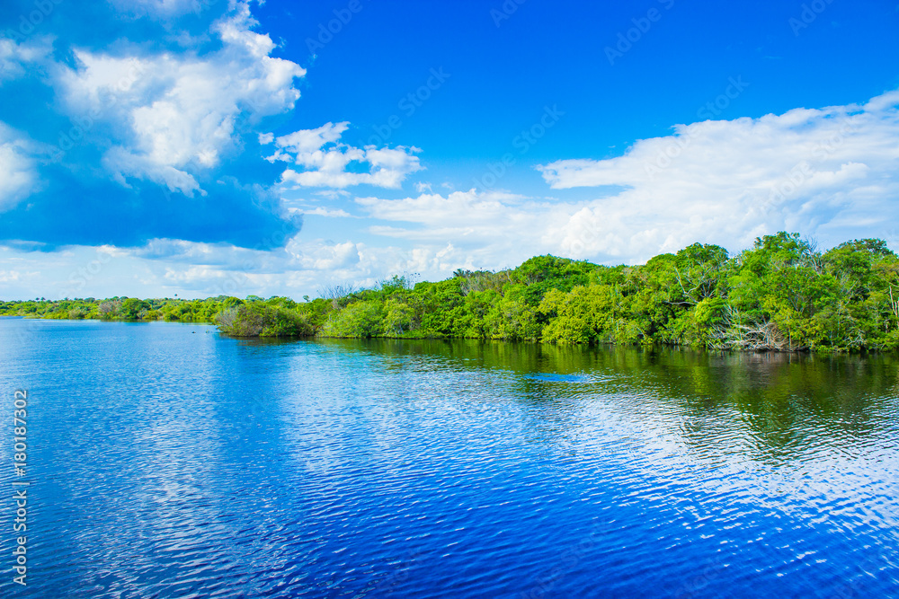

A Guiné-Bissau possui uma rica biodiversidade, com mangais, florestas e ilhas
que são essenciais para a vida, economia e cultura do país.
Preservar a natureza da Guiné-Bissau é garantir vida para proximas gerações
A Guiné-Bissau possui uma rica biodiversidade, com mangais, florestas e ilhas
que são essenciais para a vida, economia e cultura do país.
Nô terra, nô vida.


